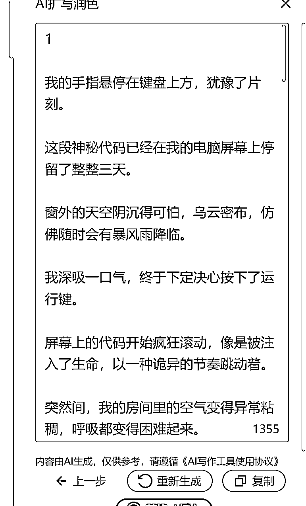

来源：https://szxb4qbve7.feishu.cn/docx/B2xMdMgnZoCIZAxeNagcm5KInff
大家好，我是盟主君，一个靠AI变现的90后实战派。
11月和12月，我们分别跑通了两个项目。
一个是在百度百家写付费专栏，另一个是在小说平台写短篇小说。收益看起来还不错。这个月很多小伙伴疯狂联系我，我也做了回复。赚钱的路上我们一起努力。
但是随着对网文市场的了解，我发现如今的网文市场还是一个非常有钱赚的地方，比如说前几天某小说平台公布了一个数据：
截至 2024 年 10 月，累计超 50 万作者在某平台获得收入。过去 12 个月，有9374 位作者年收入超 3 万元，3228 位作者年收入超 10 万元。
我也换入了一些长篇小说大佬写作群，这些大佬虽然比不上顶流的一线网文作家，年入百万，但是他们可以做到日入200+，我觉得对于普通人来说，不管任何时代写作都，是我们可以做一辈子的事情，AI成了这件事最大的杠杆，可以提升我们百倍的效率，降低门槛。
先看2个群里晒出来的真实数据吧
在之前，盟主君也写过长篇小说，我用了将近用了3个月写了40万字，那基本是我码字的极限了，因为那时候还没有AI，靠我一个字一个字敲出来的，写得很辛苦，也很畅快，也顺利签约了，但是没获得啥收益。当时觉得写小说这个事真是投入与产出不成正比，太tm累了。
两年过去了，如今有了AI写小说，那一切都变得简单了。只要你会使用工具，别说一天1万字，你一口气一天能写一本书。
废话少说，直接上干货，怎么使用工具写长篇小说。
1 打开专业的写作平台 ，请注意现在已经有很多专门基于大模型做的写作网站了，这些网站对于新手非常友好，他们已经把提示词给你写好了，你只需要用即可。
2 登录平台，选择新建作品或者导入作品（对标的小说）
3 我之前利用AI 拆书的功能，已经重新写了一份小说大纲。我将大纲复制到作品页面上‘’
4 使用上方的AI扩写润色功能，把每一章内容扩写出来。
先复制第一章的章节内容，然后点击 AI扩写润色
在右边选择AI模型，这个网站提供了三个版本模型分别是Claude、GPT4o、谷歌的模型
根据你作品的内容填写如下信息，这样AI生成的内容就会更精准。
点击扩写要求，就会出现很多大佬写好的提示词，你选择你喜欢的，对大纲进行扩写生成文章
比如我选择我自己写的提示词，针对短篇写作扩写的

最后点击生成
神奇的事就会发生了，AI会按照你写的大纲，生成全部章节的内容

你如果对AI生产的内容满意，你就直接替换到正文中，以此类推，把整个小说都用AI生成。
5 什么？你不会写大纲？ 那也没关系交给AI
点击创意，这里有各种生成器，你就说，只有你想不到的，没有AI做不到的。
我试着将现在最火的《十日终焉》小说喂给AI,他的确给我生成了与原文类似的写作手法的小说内容，并且没有一点AI味。
写作是寂寞的，也是很辛苦的，没有人能写一本就能火的，如果你能坚持写10本，也许就能有一本出圈了。
在AI时代，我们每天接受太多项目，但只要你坚持反复做一件事，我相信终会有收获。
与大家共勉，我期待着你们更多的好消息。